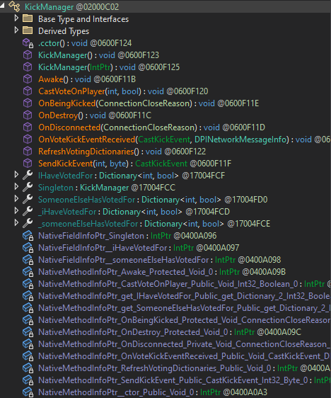
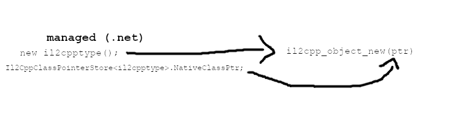
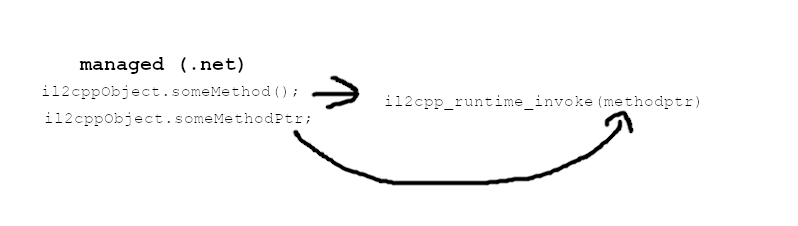
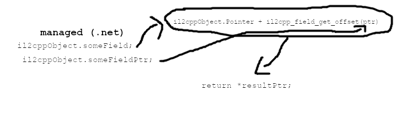

Unity's IL2CPP backend first compiles all the .NET IL of your game to C++, then compiles that C++ to machine code. This brings massive performance benefits, as you could imagine. However, when modding it requires an entirely different approach to the running of code and the way objects are handled.
Il2CppInterop
Il2CppInterop is the library used by MelonLoader to interoperate managed code with the IL2CPP code in memory. It generates a set of proxy .NET assemblies that allow us to create and manage objects from C# code.
It has features like array type wrappers, delegate conversion (managed -> il2cpp), etc etc.
Basics
IL2CPP objects in the managed domain are just wrappers.
The structure of IL2CPP objects (in memory) are pretty much identical to their managed counterparts. After all, they're just native versions of what they'd be in IL.
Every class definition of Il2CppInterop-generated assemblies has a setup like the following:

Let's analyze this.
The teal functions under the class are constructors. The ".cctor()" is a static constructor that fills in the classes' pointers, while the other two actually make an object. Notice that one of the constructors takes an IntPtr (void* for c++ nerds) as an argument; this is what actually creates the object in the IL2CPP runtime by calling il2cpp_object_new with the classes' native pointer.

The orange functions denote actual methods. When called, it takes the pointer to the native method (see purple fields) along with the pointer of the object and makes an internal call to il2cpp_runtime_invoke. That call returns another pointer to the return value (if it isn't void) and returns it dereferenced.

The dark-greenish members can represent either properties or fields. When accessed they take the base pointer of the object and add the offset of the field; then dereference that afterward.

Finally, the purplish-gray members represent pointers to the other members such as fields and methods. These get filled in by the .cctor when the class is loaded into memory.
Every IL2CPP type derives from the class Il2CppSystem.Object, just like how managed ones derive from System.Object.
However, IL2CPP types can not be used as managed types and vice versa.
With our new knowledge of IL2CPP, let's now learn how to function hook with Harmony.